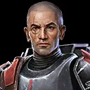
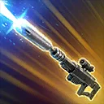
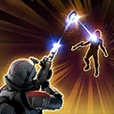
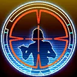
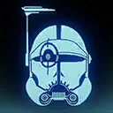

Crosshair (Scarred)
A relentless sharpshooter who works with his allies to overcome his scars

A relentless sharpshooter who works with his allies to overcome his scars

Deal Physical damage to target enemy 3 times and inflict Defense Down on them for 2 turns, which can't be evaded or resisted. If this attack misses, Expose them for 2 turns, which can't be evaded or resisted.

Deal Physical damage to target enemy, dealing 10% more damage for each relic amplifier level Crosshair (Scarred) has. Call target Bad Batch ally to assist, dealing 50% more damage.
If Crosshair (Scarred) was the target ally, he is not called to assist and instead removes 6 stacks of Shaken from himself and Stuns the target enemy for 1 turn.
If ally Omega (Fugitive) is in the leader slot and the target enemy took damage from a Bad Batch ally's attack on the previous turn, reduce the cooldown of Target Secured by 1.

Crosshair (Scarred) gains 200% Critical Damage until the end of his turn.
Deal Physical damage to target enemy and inflict Armor Shred until the end of the encounter (excluding Galactic Legends and Raid Bosses).
This attack deals 50% more damage based on the number of turns taken by enemies and Crosshair (Scarred) before Target Secured is used again (max 500%).
This attack can't be evaded and can't be used if Crosshair (Scarred) has Shaken.

At the start of battle, Crosshair (Scarred) gains 200% Defense for 3 turns and is inflicted with 20 stacks of Shaken, which can't be copied, dispelled, evaded, or resisted.
Whenever Crosshair (Scarred) gains a stack of Target Practice, he removes 1 stack of Shaken and gains 15% Turn Meter.
Whenever all stacks of Shaken are removed, Crosshair (Scarred) dispels all debuffs on himself and takes a bonus turn. He gains 100% Accuracy while targeting a Marked enemy.
If there are no Galactic Legends, Crosshair (Scarred)'s attacks ignore Protection.
Omicron Boost : While in Grand Arenas and there are no Galactic Legends: Whenever Crosshair (Scarred) is inflicted with a debuff, he dispels it and gains 5% Offense (stacking, max 100%) for 1 turn. Whenever a Bad Batch ally with Target Practice uses a Special ability, Crosshair (Scarred) assists.
Shaken: -10% Accuracy per stack, this effect persists through defeat